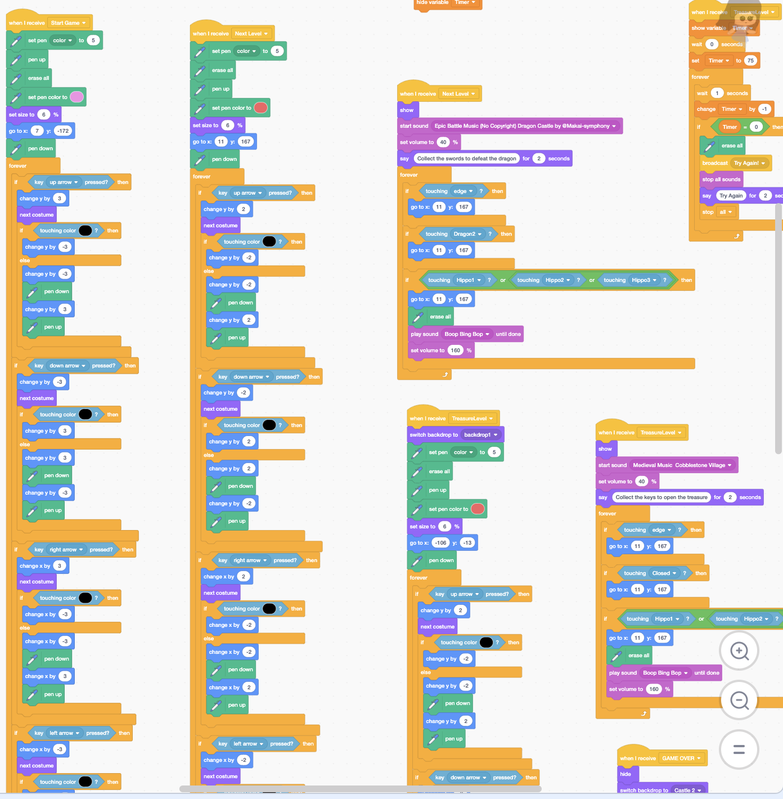
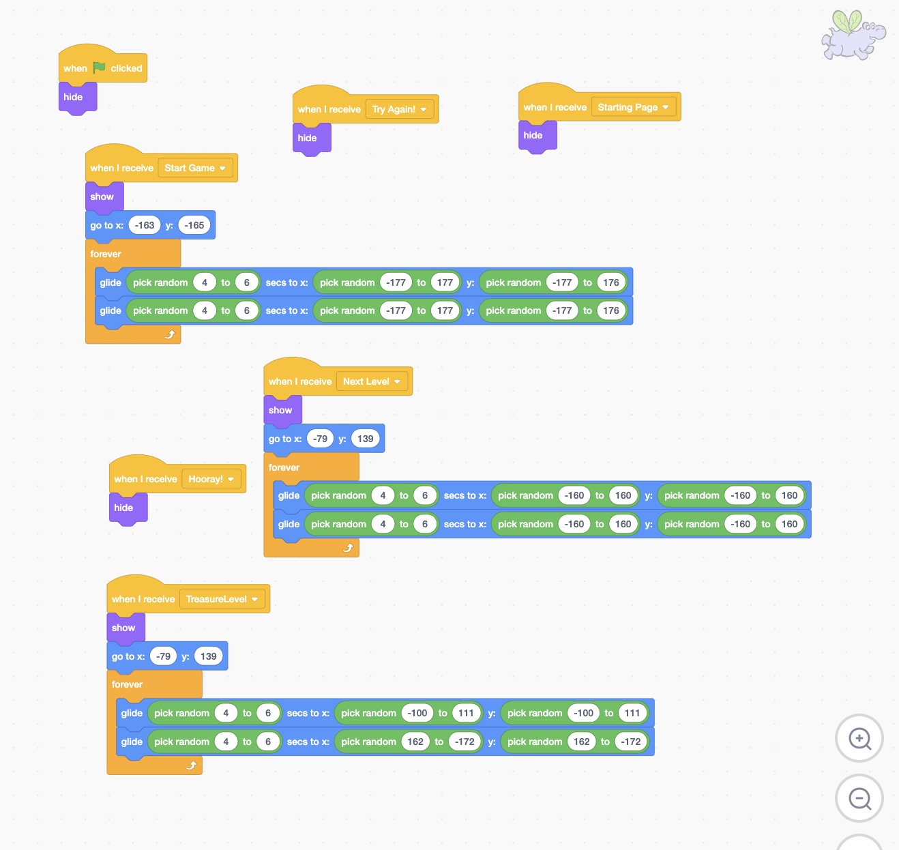
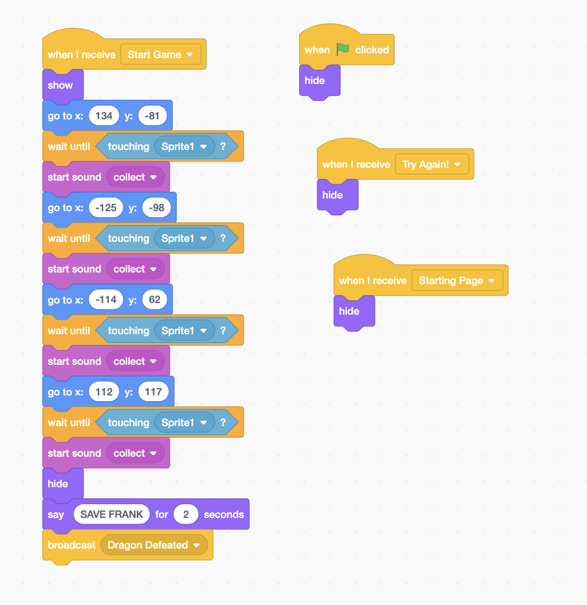
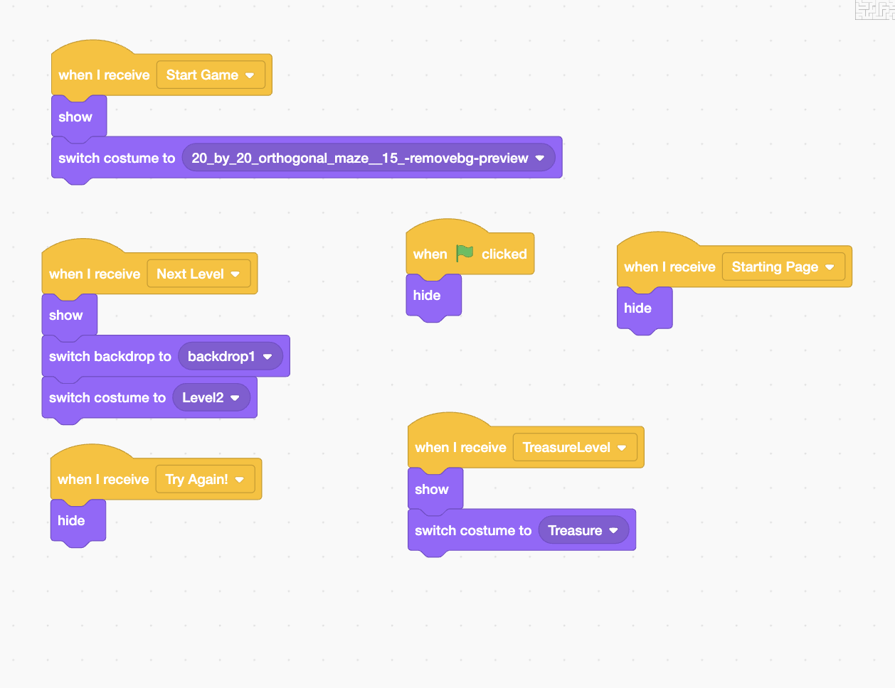

The Timed Trials
This project was created as part of a class assignment focused on introducing fundamental programming concepts through Scratch, a block-based visual coding platform. I developed a multi-level maze game that combines interactive gameplay with creative storytelling, original design elements, and sound integration.
The game challenges players to navigate through increasingly complex mazes using the arrow keys, while collecting specific items and avoiding or overcoming dynamic obstacles. Each level builds on the previous one, introducing new twists and mechanics to keep the experience engaging. I incorporated a countdown timer to add time-based pressure—if the player fails to complete the maze within the given time, the game ends with a surprising twist.
To enhance the gameplay and make the project truly my own, I designed personalized sprites, wrote a unique storyline, and even created original music to give each level its own mood and atmosphere. I also implemented logic to make the game cheat-resistant, encouraging players to complete the challenges as intended.
While there are still a few small glitches to smooth out, the game runs well overall and reflects a thoughtful blend of coding, creativity, and design. It was a fun way to explore both the technical and artistic sides of game development.
Below I'll show some photos on how I made my codes!
Sample Code for Main Sprite
Sample Code for Flying Hippos
Sample Code for Items to Collect
Sample Code for Maze Change
TRY IT BELOW!
Through creating this multi-level Scratch maze game, I developed a deeper understanding of block-based programming, including the use of loops, conditional logic, and event-driven design. I learned how to make a character die and respawn under certain conditions, which involved managing variables like health and checkpoints, as well as using broadcasts to trigger scene resets.
I also figured out how to build and link multiple levels, create clickable buttons for navigation and game start, and implement token collection mechanics that tie into player progression. These elements made the game more interactive and helped me think about user experience and gameplay flow.
In addition to the technical side, I had the chance to explore creative design by customizing sprites, writing a storyline, and composing original music to match the mood of the game. This project pushed me to be both logical and imaginative while also sharpening my debugging and problem-solving skills along the way.